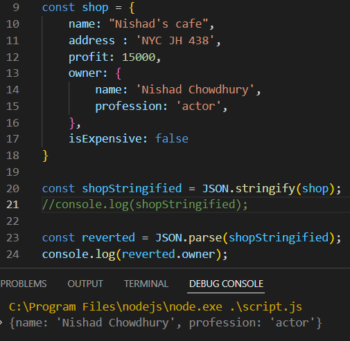

JavaScript Object Notation
J___S______O______N
JSON
Notation হল notes নেয়ার মত একটা জিনিস ,
JSON হল একটা data formate , এই formate এ ডাটা store এবং data transfer করতে পারি ।
আমরা জানি fontEnd এ ভিবিন্ন তথ্য দেখি সেটা কোননা কোন জায়গা থেকে আসে ,
এইযে ভিবিন্ন data নিয়ে আমরা কাজ করি সেগুলাকে different formate এ এক server থেকে অন্য server transfer করা হয়
অথবা backEnd থেকে fontEnd এ নিয়ে আসার কাজ । এই সব-ই data transfering এর অংশ ।
এইযে data store এবং data transfer করছি , সেই data-র একটা formate হল JSON
কোন server / backEnd থেকে কোন ডাটা দিলে সেটা stringify অবস্থায় দিবে ,
সেটাকে ব্যেবহার উপযোগী করার জন্য JSON.parse(xyz) করে নিতে হবে ।
কোন প্রকার dataকে string এ convert করাকে Stringified বলে ।
JSON এর সাহায্যে কোন Object কে string এ convert করতে হলে নিচের নিয়মে করতে হবে ।
ex:-2
কোন ডাটাকে Stringified করা হলে সেটাকে আবার পুনরায় আগের data type এ নিয়ে যাওয়ার জন্য নিচের নিয়মে করতে হবে ।
কোন নির্দিষ্ট value কেও চাইলে আলাদা করে দেখা যাবে যেমন ।
